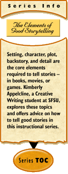

|
The Elements of Good Storytelling... Writing Dynamic Settingsby Kimberly Appelcline The first article in this series, "The Elements of Good Storytelling," introduced setting as one of the powerful tools for telling a story well. That article pointed out that, by making effective use of setting, including props, you can facilitate later events in your story. Though an interesting setting full of potential for action does not guarantee a good story, it does give it a step in the right direction, and it’s therefore worth a longer look. Obligatory Descriptions vs. Informative Settings In previous eras of literature, long descriptions of setting were often admired and respected, but most modern audiences want their stories to get to the action. Don’t let them convince you to abandon setting altogether, but be sure to use it wisely, or you’ll risk losing your audience. Setting is an opportunity, not a duty. Just as some plays can get away with almost no stage design or props, some stories (and some scenes) can get away with little setting. But consider how much information you glean from settings in your everyday life! Imagine you’re going to a party at a house you’ve never visited before, given by people you don’t know well. You aren’t sure what to expect, and you’re a bit nervous. As you walk up toward the house, you might look at the front lawn (Is there a fancy birdbath, or a plastic kiddie pool?), then at the house itself. Is it large, or small? How many lights are on? Do you hear music, and – if so – what kind, and how loud? By the time you ring the doorbell, you already have a much better idea of what to expect, just from a fairly unconscious assessment of the setting. It makes you a bit more comfortable, just having some idea of where you’re going. And setting does the same thing for readers of a story. The question is, How? A Few Words About Words Setting provides writers with a sometimes overwhelming desire to describe things. Watch out – here as everywhere in your writing – for runaway adjectives and adverbs! Too many of them will weaken your prose. You needn’t avoid them completely, but do try to use strong, specific nouns and verbs instead, whenever possible. Beware also of cliches, because they put your audience’s senses to sleep. No one notices a "golden stretch of beach" or a "rosy apple" anymore. The images have been overused to the point of becoming invisible to readers, and you should avoid them like the plague. (Hint: That was a cliche!) Atmosphere describes the overall "feeling" to a place – romantic, threatening, welcoming, etc. – and it depends largely on your word choice, as a room with "oppressive low ceilings and blood-red curtains" feels much different to a reader than a room with "cozy low ceilings and cheerful red curtains." (Note: The atmosphere would still differ if the ceiling "loomed above their heads" or "cradled them like a womb," and you’d have used strong nouns and verbs to achieve the effect, rather than adjectives.) The Elements of Setting The types of logistical information conveyed by your setting – what we might call the base elements of setting – are relatively simple, though crucial to your story. They include:
You needn’t give your audience information about all of these things in every story; just include the ones that are relevant to your story, the ones that will communicate something useful and interesting to your audience. Using the Five Senses To communicate your setting – especially logistical information such as time and weather – you need to think about and use your five senses, and make your audience use theirs, too. The five senses are:
Imagine you have just awakened in your bed. What time is it? How do you know, without looking at a clock? If you hear birdsong and garbage trucks, it’s probably early in the morning. If you hear people talking and laughing on the street, it’s probably later. How bright is the light coming through your window? Do you smell bacon cooking, or coffee brewing? What’s the temperature like? To write good settings, you must cultivate all five of your senses. We tend to take them, and the information they provide, for granted, but a writer can’t do so, or he’ll write settings that do not feel real, that don’t come alive for his audience. You don’t need to excite all five of your audience’s senses in every story, but if you’re only describing what things look like, then your setting – and hence your story – will not feel as realistic as it could. If you’ve ever been to see a stage play, you have seen this in action. Almost all theatre delights us with both sights and sounds (not only the actors’ voices, but also sound effects and background noise, such as doorbells, gunshots, horses’ footsteps, automobiles, music, and lawn mowers), but some also excite our other senses. Stage sets for A Raisin in the Sun frequently include a working stove, so that the characters can cook breakfast onstage, the odors wafting out to the audience to make the scene even more immediate. And I once attended a play called Metamorphoses, by Mary Zimmerman, for which the stage was a giant, shallow, rectangular pool. A towel was placed on every front-row seat, because the actors frequently drenched members of the audience during the play’s action. They definitely engaged their audience’s senses! Setting and Plot Plays also often use setting as a tool to aid plot and action. As one of the simplest examples, designers often plan stage settings to give actors/characters a reason to move around on the stage. They might put the telephone, which the character uses early in a scene, on one side of the stage, and the couch, which the character sits upon later in the scene, on the other side. Movement makes things more interesting, and smart stage designers (and smart writers) take advantage of this fact. Don’t put everything in one handy place; give your characters a reason to move around. Adventure stories often use this technique, by placing crucial items in a difficult to access place: a locked drawer, a far-away country, high in a tree, etc. You can also enable plot by using setting to raise questions and expectations in the minds of your audience. For example, a castle with a dark, forbidden wing can pique audience curiosity. If, as in the novel Jane Eyre, eerie laughter emanates from that wing in the wee hours, all the better. Use setting to capture your audience’s imagination, to make them want to learn more, and you are definitely on your way! (For more information on plot, and its relationship to setting, see also the first article in this series, The Elements of Good Storytelling.") Setting and Character Setting also communicates information about the characters who inhabit it. If a living room is furnished with priceless antiques, your audience will draw certain conclusions about the people who live there. If the backseat of an ancient Volkswagen bug is piled to the ceiling with old newspapers, they’ll draw different conclusions. When entering someone’s house for the first time in real life, we usually have a look around, notice the artwork on the walls, the books on the shelves, the music playing on the stereo, the photos on the mantle, the tidiness of the kitchen, and the shower curtain in the bathroom. Even if we aren’t consciously trying to glean information about our hosts, we can’t help but learn more by seeing their home. If there’s a large painting of a male nude hanging in the hallway, we’re probably going to notice, and it’s going to tell us something. When attempting to express character through setting, beware of stereotypes. Not all college students live in ramshackle apartments with smelly old furniture and pizza boxes on the living room floor. Not all college professors have bookshelves lining their walls and collections of classical music CDs. Think about what makes your character unique and interesting, and how those things might be expressed in the character’s house, car, office, yard, etc. (For more information on character, and how it relates to plot, see also the first article in this series, The Elements of Good Storytelling, and the second article, Creating Vivid Characters.) Setting in a Nutshell In short, when creating the setting for a story, make it as dynamic as possible. Don’t throw in a bunch of description – no matter how fascinating – that has nothing to do with the movement of your story. Rather, use setting consciously to communicate specific information to achieve a particular effect on your audience. Word choice is crucial when you create a setting for a story. Beware of using cliches or too many adjectives and adverbs, and try to be aware of how your word choice affects the overall atmosphere of the story (and, hence, your audience’s expectations). When writing setting, you can communicate a variety of types of logistical information, including location, time, and weather. This information is best conveyed through appeals to the five senses: sight, hearing, touch, taste, and smell. You can also use setting to enable plot – especially through encouraging movement and raising audience questions and expectations – and develop character – but try not to fall into stereotyping. The following exercises should help you practice using these various techniques in your own storytelling. Exercises
ABOUT KIMBERLY APPELCLINE |